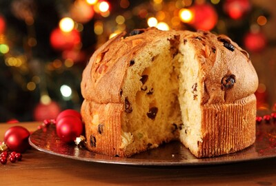

Bakery foods

Lebkuchen and roasted chestnuts, Germany
If you decide to go to Germany on Christmas, you will certainly find numerous and large Christmas markets. Even you can discover some which were founded in the 15th century.
The period during which you can visit these markets can be different. For example, in one town it can be just 2 days, while in other several weeks.
The main attraction of these places is roasted chestnuts. They are sold everywhere. When you feel their delicious smell, you won’t be able to leave any of the numerous markets.
One of the traditional Christmas foods in Germany is Lebkuchen. It is a kind of biscuit with icing and almonds.

Fried carp, Czech Republic
Now, when winter holidays are coming near, Czech markets can suggest you a great choice of fresh carp. People in this country usually buy it in advance and keep it until the holiday.
There are various ideas for cooking this fish. It can be fried or cooked like a fish soup. Another popular dish in the Czech Republic is potato salad.

Buche de Noel, France
This name is translated as “Yule Log” from French. It is connected with the Viking times when it became a tradition to burn a large log on dark nights. It was normally done during the winter solstice. But when the years passed, that tradition was not observed as before.
One of the reasons is cutting down the trees in the forests. To stick to the custom, people created this cake, which is some kind of Swiss roll. You need to fill it with chocolate buttercream. To make it look nice and like a log, grate some chocolate over the cake and add pine needles.

Panettone, Italy
This cake was invented in Italy. The legend tells about one boy who was in love with a girl and wanted to try all ways to get her attention. He chose one of the most creative ways.
The boy made up his mind to bake an amazing and delicious cake. What was it like? He made an incredible high bread loaf.
Its exquisite taste was completed with raisins, lemon zest, and candied orange. Nobody knows the result of the boy’s efforts. But surely it became a traditional Christmas food in Italy.
Making panettone is a long process. You will spend that no less than 3 days. First, it was baked in Milan, but nowadays panettone is made around the world. For example, Latin America is famous for this cake.
Ponche, Mexico
If you like warm drinks with spices, you should certainly try ponche. It is Mexican gluhwein. The main ingredients of the drink are the following: tejocotes, guavas, cinnamon, pods of tamarind. It can be mixed with tequila.
Every country has its own Christmas traditions, and Mexico is not an exception. It is called posada. During the holiday people go to the houses of their neighbors and try to find an inn there. That is some kind of imitation.
The hosts usually treat these people with ponche and snacks. After that, they go together to the next neighbor.
It can be difficult to prepare treatments for so many people. But still, they manage.
Risgrynsgrot, Sweden
When Christmas time comes, people in Sweden are busy cooking cinnamon rice puddings as it is their traditional food. When the cooking process is being finished, it is necessary to add one almond to the pudding. It is believed that if a woman manages to find the almond in the pudding, she will marry the next year.
Txistorra, Spain
One of the traditional holidays in Spain is St. Thomas Day. Txistorra is amazingly popular during this feast. It is a Basque sausage. People start cooking this dish for St. Thomas feast and also continue that on Christmas.
First, it was cooked in the Basque district in Spain. To cook this dish, you need such ingredients as lamb tripe, minced pork, paprika, garlic, and salt.
Farofa, Brazil
This food is trendy in Brazil. It is cooked from manioc flour. The other ingredients can vary greatly.
For example, you can make it with bacon, eggs, onion, raisins, dried fruit. Farofa becomes one of my favorite dishes in Brazil during Christmas.
Doro Wat, Ethiopia
In Ethiopia, Christmas is celebrated on the 7th of January. On this special day, people traditionally go to church, and after that, they meet with their friends and relatives and enjoy eating doro wat. It is a stewed chicken with spices. Perfect addition to this festive food is usually a flatbread from teff flour.
Bibingka, Philippines
If you are interested in the Philippines and its traditions, I will tell you about their popular cake for Christmas. That is bibingka, made from rice flour.
Also to cook it you need eggs and coconut. Its texture is chewy. While making this cake, people wrap it in banana leaves and put it into the oven.
But the oven is not usual; it should be a clay oven. At the end of the baking process, it will be nice to grate coconut over the cake and put a few slices of duck egg.